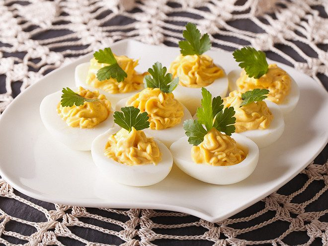
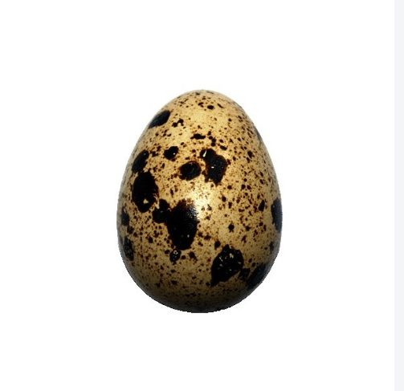

Une recette avec oeufs de caille: oeufs de caille panés
Bouillir des œufs pendant 8 min dans une eau salée. Laissez tiédir et les écailler. Mettez les œufs dans la farine, ensuite dans la…
Lire l'article →Des petites histoires écrites par Zackary, au fil des saisons.
Les cailles, les cochons d'Inde, et les moments de la fermette.
Bouillir des œufs pendant 8 min dans une eau salée. Laissez tiédir et les écailler. Mettez les œufs dans la farine, ensuite dans la…
Lire l'article →
Cuire les oeufs dans un chaudron d'eau, les écalés et les couper en deux Écraser le jaune avec de la mayonnaise et regarnir avec une poche…
Lire l'article →
Il y a beaucoup de couleurs d'oeufs de caille : bleu, turquoise, brun et noir.
Lire l'article →Les cailles ne volent pas, elles sautent très très haut et planent très loin c'est pour ça qu'il faut des cages avec un plafond bas sinon…
Lire l'article →Dans la première portée des cailles il y a Mathilda la première, Ron le plus vite, Jannie est la plus calme et Anna est la plus nerveuse.
Lire l'article →